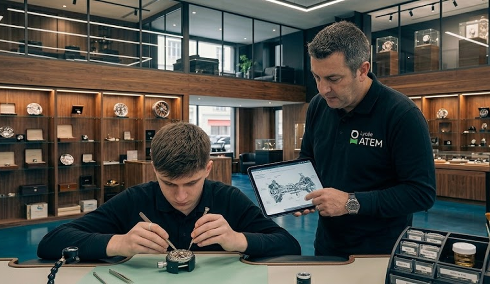
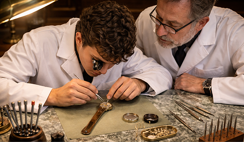
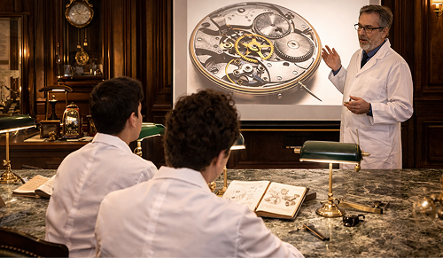

DM MADE
formation on made horlogerie
Former des spécialistes capables de concevoir, réparer et restaurer des mécanismes horlogers, en maîtrisant à la fois les gestes traditionnels
de précision et les apports des technologies contemporaines. Ce diplôme vise à développer une expertise complète dans la compréhension des systèmes
mécaniques complexes, depuis l'analyse des composants jusqu'à leur assemblage et leur réglage.
Les étudiants acquièrent des compétences techniques avancées en micromécanique, en ajustement des pièces et en diagnostic des dysfonctionnements,
tout en développant une sensibilité esthétique liée au design et à la finition des objets horlogers. Ils sont également formés à l'utilisation d'outils
modernes d'aide à la conception et à la fabrication, tels que les logiciels de CAO et les équipements de haute précision.
Programme
Télécharger
1er semestre
1. Initiation à l'horlogerie Découverte des composants d'une montre mécanique : mouvement, rouages, échappement. cours théorique apprentissages de différentes pièces.
2. Techniques de démontage et remontage Apprentissage des gestes précis pour démonter, nettoyer et réassembler un mouvement horloger.
3. Réglage et précision Étude des systèmes de régulation du temps et ajustement de la précision des montres.
2nd semestre
4. Restauration et entretien Intervention sur des montres anciennes, diagnostic de pannes et remplacement de pièces.
5. Fabrication et finitions Initiation à la fabrication de composants et aux techniques de finition (polissage, décoration).
6. Projet final note du bac ccf + épreuve écrite Réalisation ou restauration complète d'une montre mécanique. l'éleve sera équipé d'une montre de luxe récente (non fonctionnelle) et une montre ancienne (non fonctionnelle) et devra les répares en face d'un jury spécialiser. L'élève devra assister a une épreuve écrite qui équivaut a 30% de la note finale, il devra repondre a des questions de connaissances vu lors des cours théoriques.
Compétences développées
- Maîtrise des mécanismes horlogers
- Précision et minutie technique
- Diagnostic et réparation
- Connaissance des matériaux et outils spécialisés
Débouchés
- Horloger réparateur
- Technicien en manufacture
- Restaurateur de montres anciennes
- Conseiller en horlogerie de luxe


